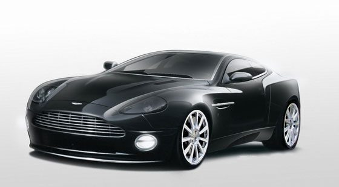

Archives
Aston Martin Vanquish - Ultimate Edition

Je ne posterai pas souvent sur les voitures, mais quand l'Aston Martin Vanquish se retire du marché avec un dernier modèle, faut bien que je poste, non?
L'ultimate edition reste basée sur l’appellation “S” avec le V12 Vanquish de 6.0 qui développe environ 530 ch. 40 exemplaires sont prévus, pour un modèle à la sellerie cuir spéciale en plus d’une plaque numérotée.
Et en plus, c'est presque offert, on tourne autour de 274 000 € ...
Commentaires 2
André Schneider, 2007-07-26 03:04
Ah, quelle merveille ! Si vous avez visité les anciens bâtiments à Newport Pagnell où furent construits toutes les "DB" vous comprendrez ce que le mot "nostalgie" veut dire par rapport à l'artisanat et qualité des "vieilles" Aston. Les "ouvriers", tous de la plus noble tradition, avaient un savoir-faire inégalé au monde, non seulement au niveau technique, mais aussi au niveau de la mémoire individuelle et collective. Avec cette "Ultimate", une page se tourne et sans doute les nouveaux propriétaires de la Marque vont rationaliser, comme l'ont fait Rolls et Bentley, et bien plus tôt Ferrari et Maserati. Une page se tourne et cette voiture sera sans doute la dernière d'une série mythique, sans que pour autant cela la Marque soit déconsidérée dans l'avenir : elle ne pourra que s'améliorer, même si le charme ne sera peut-être plus le même ... Bref, le MUST ABSOLU pour tout collectionneur !
patrice.roulive, 2007-07-26 13:23
malheureusement trop cher pour ma bourse ;-)